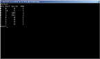

mbrbm (Master Boot Record Boot Manager)
|

|
Table of contents:
- News
- Summary
- License
- Documentation
- Screenshots
- Features
- Download
- ToDo
- Contacts
- Links
News
October 23, 2006
mbrbm version 1.0 has been released
Summary
About
mbrbm is yet another boot loader which fits into first sector of an HDD (MBR). It allows to choose which partition
to boot and is intended to replace an MBR coming with DOS/Windows. It may boot any primary partition boot
record below cylinder 1024.
mbrbm is not an operating system loader. I can not boot Linux or Windows directly (thus it is not a replacement of
LILO/GRUB/ntldr for example), but it can boot an appropriate loader from a boot record of a particular partition
(again LILO/GRUB/ntldr for instance).
mbrbm's functionality is completely implemented _WITHIN_ the Master Boot Record. It is written in nasm (x86 assembler).
On boot it displays a primary partition list with type/size and let the user choose the booting partition by
selecting it by number-keystroke. At timeout the active partition is bootet.
With no interaction it does exactly what a standard DOS/Windows9x/ME (fdisk /mbr) MBR does.
Restrictions are that it cannot boot via LBA (partitions above cylinder 1024) and extended partitions.
It's compatible with DOS, Windows(9x,ME,NT,2K,XP,2003,Vista), Lilo, Grub, xBSD, ... partition boot records.
My usage of mbrbm is primary for servers on which i always put a FreeDOS partition for basic diagnostic and recovery tasks,
regardless whether the server is running Linux, xBSD or Windows.
There are no driver troubles with DOS accessing the disks, raid, ... the BIOS takes care of it.
There are lots of good tools for hardware diagnostic, partition recovery and the like running on FreeDOS.
With mbrbm i have always a spare boot option without complicated boot manager setups - the standard boot
method setup of the target OS living in the second or third partition works out of the box with the standard
installation procedure of the server OS - no hassle with lilo, grub or BOOT.INI configuration after the installation.
And the best part is that i need no documentation of a complicated setup for the other system administrators.
This scenario did save my life a few times. Therefore i share it here.
Project goals
- To maintain a boot loader which fits into master boot record
(first sector of HDD 512 bytes from which only 438 bytes can be used for code, some place is occupied by VolumeID,
partition table and a magic number) of a hard disk. There are lot of boot managers occupying almost whole track #0
of cylinder #0. I don't want to compete with them. The unused sectors on track #0 are also often used by recovery
software, so the chance to break something is relatively high
- To allow a user to choose which operating system to boot with a simple textual interface (no graphics, icons, mouse,
etc.) with timeout to active partition
- To support as many operating systems as possible
- No configuration software need
- No installation software need - just copy the 438 byte of code to disk - that's all
- THE WHOLE PROJECT DELIVERS 438 (four-hundred-and-thirty-seven) BYTES OF CODE
License
GPL V2.
Documentation
Requirements
- Run requirement:
IBM PC-compatible computer with INT13 BIOS (99.99999% of all computers - even very old ones are Ok)
- Compile requirement:
The mbrbm MBR could be compiled on Linux and BSD with nasm
- Installation requirement:
Standard Linux, xBSD (dd) or FreeDOS (FDISK) tools (can boot these from CD at installtime)
Installation and uninstallation
The mbrbm project is intended to be used by advanced users on their desktop computers. If you have several operating
systems and want to be able to boot either of them, you may use mbrbm. It is a replacement of the default boot loader
in MBR which for instance could be written there by Microsoft Windows installation. The whole installation is just
the writing the very first 438 bytes of the first harddisk with the assembled code of mbrbm.S - the MBR.
THERE IS NO CONFIGURATION - INSTALLATION -> DONE.
FULL BACKUP IS HIGHLY RECOMMENDED
PROCEED ONLY IF YOU REALLY KNOW WHAT YOU'RE DOING HERE
YOU NEED A WORKING PARTITION BOOT SECTOR FOR EVERY
OPERATING SYSTEM YOU WANT TO BOOT
Compilation of the mbr (or take the compiled version for the distribution archive):
[root@mbrbm /etc]# cd /etc
[root@mbrbm /etc]# nasm mbrbm.S -o mbrbm.bin
Installation with Linux on first IDE Harddisk (use /dev/sda for SCSI):
[root@mbrbm /etc]# cd /etc
[root@mbrbm /etc]# dd if=/dev/hda of=hda.mbr bs=1b count=1
[root@mbrbm /etc]# dd if=mbrbm.bin of=hdambrbm.mbr bs=1 count=438
[root@mbrbm /etc]# dd if=hda.mbr bs=1 skip=438 count=74 >>hdambrbm.mbr
[root@mbrbm /etc]# dd if=hdambrbm.mbr of=/dev/hda bs=1b count=1
[root@mbrbm /etc]# # KEEP THE FILE /etc/hda.mbr AS BACKUP OF ORIGINAL MBR
Deinstallation with Linux on first IDE Harddisk:
[root@mbrbm /etc]# dd if=/etc/hda.mbr of=/dev/hda bs=1b count=1
Installation with FreeDOS on first Harddisk:
C:\> C:
C:\> CD \
C:\> FDISK /SMBR 1
C:\> COPY BOOT.MBR hda.mbr
C:\> COPY mbrbm.bin BOOT.MBR
C:\> FDISK /AMBR 1
C:\> : KEEP THE FILE C:\hda.mbr AS BACKUP OF ORIGINAL MBR
Deinstallation with FreeDOS on first Harddisk:
C:\> COPY hda.mbr BOOT.MBR
C:\> FDISK /AMBR 1
Frequently asked questions (FAQ)
Q1: Yet another boot manager? What are the advantages of mbrbm over others?
A1: mbrbm is first choice if you want an operating system independent boot manager without configuraton.
Unlike grub, lilo or ntldr(BOOT.INI) mbrbm does not need a working (booting) operating system partition.
It's whole functionality is within the MBR.
It will not fail to boot your secondary operating system if you completely destroy the primary.
In fact there is no more a primary or secondary OS.
In effect complexity is dramatically reduced from the bootstrapping system.
The OS's on the system are just installed with their default booting schema.
No configuration afterwards is needed. No hassle with lilo.conf, grub.conf or confusing BOOT.INI magic.
Consider a situation when you have 2 primary partitions: one with Windows XP and another one with Linux.
What are your options to boot either of them?
Using LILO which is able to boot both OSes you will loose an ability to normally boot a system to Windows XP
if you completely fill Linux partition by zeroes.
The same with standard DOS + loadlin or Windows ntldr + BOOT.INI executables.
In this case you should not break Windows partition otherwise you will loose an ability to load Linux.
Of course there are many other third-party managers which are not parts of the operating systems above.
Several alternatives to mbrbm are listed in Links section.
However almost all of them require either separate partition (like OS/2 boot manager)
or a directory in FAT partition (like PQBoot) or occupy almost the whole track #0 on cylinder #0
(it is unused on most systems).
mbldr (Master Boot LoaDeR) needs to be configured, what has to be redone when booting partitions are added or moved.
bm uses also parts of track #0 - nuni can only boot IDE drives and needs source code configuration.
All these solutions add complexity to the bootstrap setup - complexity is the biggest enemy of availabilty and security!
mbrbm requires only the space which is reserved for the master boot loader by definition, only 438 bytes of 1st sector are used.
Nevertheless there are some drawbacks: the extreme simplicity leads to low quality of user interface
(only text with minimum usability), less features could be included: no lba and extended partitions can be bootet.
Q2: Compilation breaks with "error: argument to ORG should be numeric" message in mbrbm.err. What am I doing
wrong?
A2: The version of nasm required to build mbrbm is greater or equal to 0.98.36. Release .35 which is often
shipped in many popular (but rather old) distributions could not be used.
Q3: When trying to update the MBR contents on /dev/ad0 under BSD I get "Operation not permitted" error. How to
overcome this?
A3: This protection of BSD is active because hard disk is available for writing at the moment. Try to issue a
command "sysctl kern.geom.debugflags=16" to temporarily disable it. Update your MBR and then return this value back to 0.
Useful hints and advices
- Disable all MS-DOS disk caching programs before installing/configuring master boot sector with mbrbm.
- Disable BIOS write-protection on boot sector and master boot sector at installation time.
After installation the boot sector is never modified again - the BIOS protection could be enabled again.
There is NO need for configuration - even after moving or deleting/creating primary partitions.
- Always keep bootable floppy or CD with a backup of MBR. If for some reasons the MBR loader or (what is even worse)
partition table is broken, you may restore it with the backup.
- When using Linux with LILO/GRUB it is reasonable to install LILO into boot record of a chosen partition, not MBR.
Of course if you want to use mbrbm in the MBR instead.
- Installation of all known Windows operating systems overwrites MBR. You have to reinstall mbrbm after you install
any Windows on any partition. Since boot record of a target partition is also updated by Windows installation routine
it is safe to overwrite MBR contents with mbrbm - since mbrbm is only 438 bytes Windows's VolumeID is also preserved!
Same with modern lilo's DiskID.
- Due to mbrbm restriction to 1024 cylinders be aware to keep your booting OS partitions ("/", "/boot", "C:\")
within the first 8 Gigabyte - anyway a good idea to separate the root-filesystem (again "/", "/boot", "C:\") from
all other data (applications and user data).
Important notices and limitations
There are following limitations and configurations that have never been tested yet. All information related to the topics
below is welcome (test cases, links to appropriate documentation,
patches, etc.)
- mbrbm supports so-called primary partitions (4 primary partitions). non-DOS partition tables are not supported.
- SCSI hard disks with BIOS support are tested.
- mbrbm works in configuration with RAID.
- mbrbm works in configuration with LVM.
- Microsoft Windows "dynamic disks" is not tested.
- mbrbm can boot records from primary partitions on second drive.
- mbrbm does check partition table for minor errors like standard DOS/Windows MBR does.
Troubleshooting
If mbrbm does not work for some reason you may ask for support. What do you need to provide in order to get help:
- Is mbrbm installed properly? "dd if=/dev/hda bs=1 count=438 | md5sum" should match the mbrbm.md5 in the distribution tar
- Deinstall mbrbm - does the problem stay? Remember installation of mbrbm does only alter 438 bytes on the HD!
- Describe hardware configuration (disks subsystem: number of drives, their types (ATA, SATA, etc.), primary
or secondary, sizes, etc.)
- Report the version of mbrbm you are using
- Explain the problem (crash, hanging, incorrect behavior, etc.)
- Describe partitioning scheme of your hard drives (sizes and filesystems on primary partitions and logical disks).
Appropriate screenshots of fdisk may help as well.
- Provide a description of OSes you want to boot: where are they, how many oses you want to boot, what are they
(brands+versions)
- What other boot-related software do you use (other boot managers for example on other hard disk, OS loaders like
LILO, etc.)
Not all items above are mandatory, but however if you provide quality feedback with much info describing your problem,
I may help you with greater probability.
But please don't forget - mbrbm is my hobby, there is no guarantee this software will work properly. I'm not responsible for
any damage it may cause. Immediate support is also not guaranteed.
Screenshots
Boot menu (mbrbm version 1.0):
Features
- May boot up to 8 operating systems from primary partitions of two disks
- MBR boot loader is written in Assembly language and compiled with NASM
- Supports user-defined boot by pressing an appropriate key ("0", "1", "2", "3", etc.)
- Supports boot timeout with loading of the active partition
- It fits into first 438 bytes of a 1st sector on a hard disk, not requiring separate partition to be allocated
- Supports all kind of hard disks supported by BIOS: ATA, SATA and SCSI
- Development of mbrbm requires only free software: Linux/xBSD and nasm
Download
|
Distribution file
|
Version number
|
Date
|
Status
|
Release short description
|
|
mbrbm-1.0.tar.gz
|
1.0
|
October, 2006
|
Stable, production for compilation/install with Unix
|
Current
|
|
mbrbm-1.0.zip
|
1.0
|
October, 2006
|
Stable, production for install with FreeDOS
|
Current
|
ToDo
There are some plans for future. Feel free to suggest
new features, send patches and improvements:
- Strong optimization of assembly code in MBR
- LBA support. There are still 6 bytes free for code!
Contacts
The recommended way to contact current maintainer is to use an appropriate mechanism on
sourceforge project site (forum, tracker, bugs, feature requests, etc.).
In the e-mail addresses below there is no hypertext references due to spam bots protection:
Current maintainer of mbrbm is Axel Reinhold
- freakout42 __at__ users __dot__ sourceforge __dot__ net
Note: you need to replace " __dot__ " with "." and " __at__ " with "@" before using the addresses above.
Links
Project related resources:
Similar projects (other boot managers):
Assembly language descriptions and CPU instructions set
Partition tables and boot loaders
Development and packaging stuff
BIOS and ATA specifications
Last updated: October 23, 2006
{kind=link}